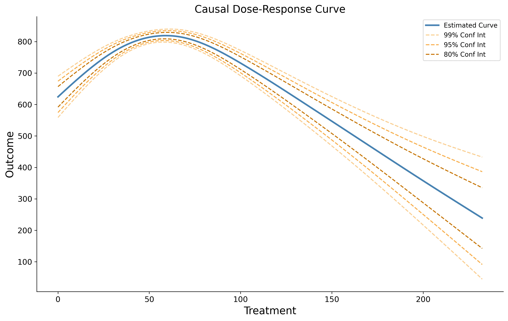

A python package for performing causal inference when a treatment is continuous.
There are many implemented methods to perform causal inference when your intervention of interest is binary, but few methods exist to handle continuous treatments.
This is unfortunate because there are many scenarios (in industry and research) where these methods would be useful. For example, when you would like to:

This library attempts to address this gap, providing tools to estimate causal curves (AKA causal dose-response curves). Both continuous and binary outcomes can be modeled against a continuous treatment.
The GitHub repository can be found here.